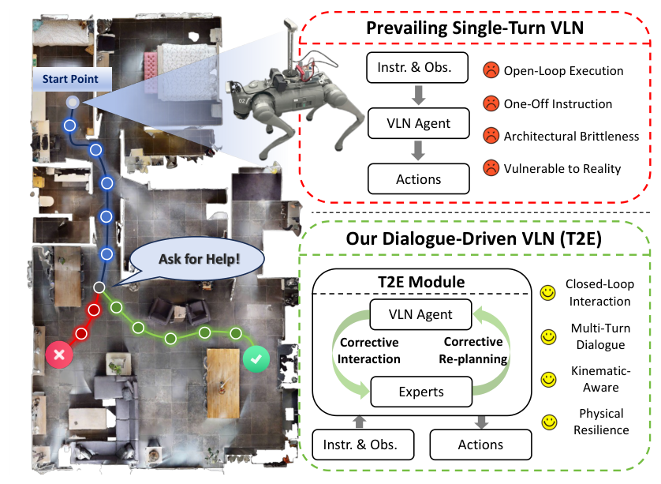
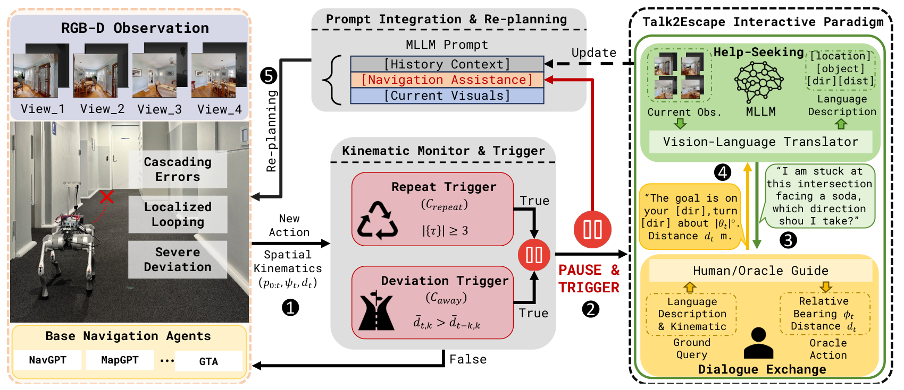
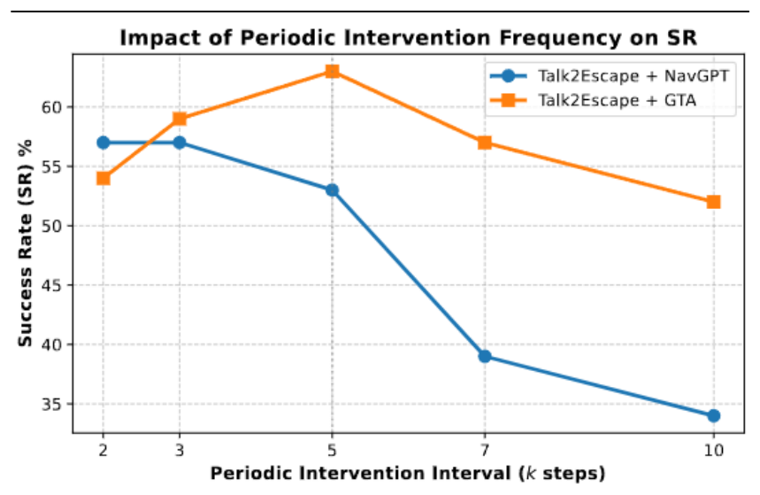
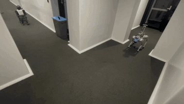
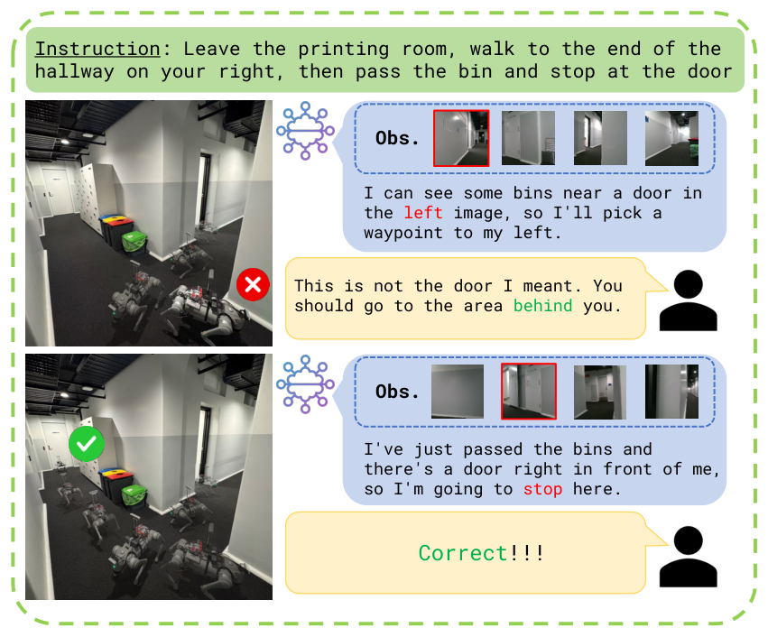
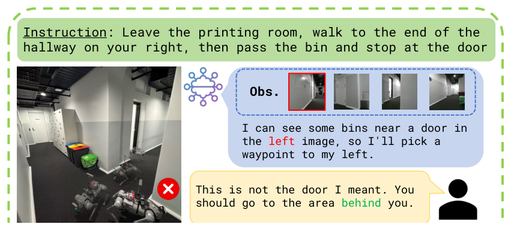
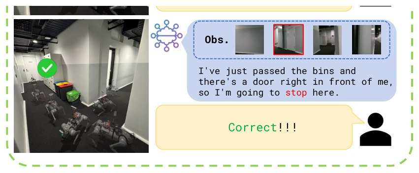

Talk2Escape: Conversational Grounding for Vision-and-Language Navigation
Talk2Escape lets navigation agents ask for help when they are stuck and use spatially grounded dialogue to recover.
Abstract
While Vision-and-Language Navigation (VLN) has demonstrated remarkable progress, the prevailing single-turn paradigm exposes a fundamental vulnerability: agents operate in a strictly open-loop manner. In practice, factors such as perceptual aliasing, sensor noise, and odometry drift cause minor deviations to accumulate over time, leading to catastrophic mission failures with no built-in mechanism for error recovery. To address this, we introduce Talk2Escape (T2E), a proactive and model-agnostic dialogue intervention framework that reframes navigation as a closed-loop interactive process. At its core, a lightweight kinematic monitor continuously tracks agent motion. Upon detecting localized looping or severe trajectory divergence, a vision-language translator grounds raw egocentric observations into concise natural-language queries to solicit targeted corrective feedback from either an algorithmic oracle or a human-in-the-loop. Extensive evaluations across R2R-CE, RxR-CE, and VLNVerse demonstrate consistent improvements across diverse base agents: Talk2Escape achieves 72.0% SR (66.0% OSR / 49.4% SPL) on R2R-CE with GTA and 84.60% SR on VLNVerse with NavGPT (up from 19.30%), outperforming both zero-shot and supervised state-of-the-art methods. We further validate sim-to-real transfer on a Unitree Go2 quadruped, lifting real-world navigation success from 40.0% to 62.0%.

The Talk2Escape Framework
Figure. Overview of the Talk2Escape framework across five closed-loop stages:
❶ Base Navigation Agents: Model-agnostic continuous VLN agents (e.g., NavGPT, MapGPT, GTA) output spatial kinematics (p0:t, ψt, dt) and actions from 4 orthogonal RGB-D views {0°, 90°, 180°, 270°}.
❷ Kinematic Monitor & Trigger: Evaluates spatial progress at every step, firing a Repeat Trigger Crep(t) = 𝟙[|{τ ∈ [0, t] : ||pτ − pt||xz < 0.5 m}| ≥ 3] on localized loops or a Deviation Trigger Caway(t) = 𝟙[d̄t,k > d̄t−k,k] (k = 2) when moving away from the target, proactively pausing the robot.
❸ Vision-Language Translator: Grounds the 4 current RGB-D views and trigger mode into a concise, landmark-anchored query Qk (e.g., “I am stuck at this intersection facing a sofa; which direction should I take?”).
❹ Human / Oracle Guide: Responds with a targeted relative bearing and distance hint ht (or human natural-language correction).
❺ Prompt Integration & Re-Planning: Injects (Qk, ht) into the MLLM prompt's [Navigation Assistance] block between historical context and current visuals to escape the failure state.

When to Speak: Strategic Sparsity
More frequent dialogue is not always better. Comparing six trigger strategies on R2R-CE reveals a striking phenomenon we term “intervention fatigue”:
While the targeted Deviation Trigger (Caway, 15.0% trigger rate) achieves the best autonomous performance (66.0% SR, 49.4% SPL), combining Repeat + Deviation into a Hybrid Trigger (23.1% rate) causes SR to drop to 54.0%.
As shown in the frequency curve (left), a vanilla agent like NavGPT degrades linearly as guidance becomes sparser, whereas a strong planner with internal memory like GTA follows an inverted U-shape: overly frequent polling (k < 5) disrupts its internal counterfactual reasoning, while moderate or deviation-triggered sparsity rescues it only when needed.

Active Dialogue vs. Passive CoT & Coordinate Mismatch
Can internal Chain-of-Thought (CoT) reasoning replace external conversational grounding? On the high-fidelity VLNVerse benchmark, adding passive CoT lifts NavGPT by only +9.40% SR (19.30% → 28.70%), whereas Talk2Escape propels it by +65.30% to 84.60% SR (and lifts SPL from 8.13 to 35.20).
The Modality Mismatch Insight: Although MapGPT outperforms NavGPT in open-loop execution (25.53% vs. 19.30% SR) thanks to dense 3D coordinate prompts, it scales less effectively with dialogue hints (67.02% vs. 84.60% SR). Overloading the MLLM prompt with absolute 3D coordinates conflicts with the relative, egocentric semantics of human/oracle hints—showing that a clean, action-centric history aligns far better with conversational corrections.

Sim-to-Real Rescue on a Unitree Go2
We deploy Talk2Escape on a physical Unitree Go2 quadruped equipped with a servo-sweeping RGB-D camera, decoupling low-frequency MLLM cognition from high-frequency point-to-point locomotion.
Under a strict human-in-the-loop protocol that mirrors the Deviation trigger Caway, grounded conversational hints rescue the robot from perceptual aliasing (such as stopping at a wrong door near trash bins) and kinematic drift, boosting real-world Success Rate from 40.0% (open-loop GTA) to 62.0% and reducing Navigation Error to 3.31 m. Our experiments also identify the “asymmetric context” bottleneck when human guides only see static frames without spatio-temporal orientation history.

Interactive Failure-Detection & Dialogue-Rescue Explorer
Select an interactive recovery scenario below to inspect how Talk2Escape detects kinematic anomalies, formulates grounded visual queries, and injects corrective guidance to rescue the navigation agent:
Open-Loop Failure & Kinematic Trigger Activation

Grounded Dialogue Hint & Closed-Loop Escape

Experimental results
Quantitative Results on R2R-CE & RxR-CE
| Method | Paradigm | R2R-CE Val-Unseen (100-Ep Protocol) | RxR-CE Val-Unseen (260-Ep Protocol) | |||||||
|---|---|---|---|---|---|---|---|---|---|---|
| NE (↓) | OSR (↑) | SR (↑) | SPL (↑) | nDTW (↑) | NE (↓) | SR (↑) | SPL (↑) | nDTW (↑) | ||
| CMA | Supervised | 6.30 | 49.0 | 38.0 | 33.0 | – | 10.4 | 24.1 | 19.1 | 37.4 |
| VLN-BERT | Supervised | 5.74 | 53.0 | 44.0 | 39.0 | – | 8.98 | 27.1 | 22.7 | 46.7 |
| ETPNav | Supervised | 4.71 | 65.0 | 57.0 | 49.0 | – | 5.64 | 54.8 | 44.9 | 61.9 |
| BEVBert | Supervised | 4.70 | 67.0 | 59.0 | 50.0 | – | 4.80 | 64.4 | – | 65.4 |
| HNR | Supervised | 4.42 | 67.0 | 61.0 | 51.0 | – | 5.51 | 56.4 | 46.7 | 63.6 |
| NavFoM | Supervised | 4.61 | 72.1 | 61.7 | 55.3 | – | 4.74 | 64.4 | 56.2 | 65.8 |
| Efficient-VLN | Supervised | 4.18 | 73.7 | 64.2 | 55.9 | – | 3.88 | 67.0 | 54.3 | 68.4 |
| Open-Nav | Zero-Shot (Open-Loop) | 6.70 | 23.0 | 19.0 | 16.1 | 45.8 | – | – | – | – |
| CA-Nav | Zero-Shot (Open-Loop) | 7.58 | 48.0 | 25.3 | 10.8 | – | 10.37 | 19.0 | 6.0 | – |
| SmartWay | Zero-Shot (Open-Loop) | 7.01 | 51.0 | 29.0 | 22.5 | – | – | – | – | – |
| STRIDER | Zero-Shot (Open-Loop) | 6.91 | 39.0 | 35.0 | 30.3 | 51.8 | 11.19 | 21.2 | 9.6 | 30.1 |
| VLN-Zero | Zero-Shot (Open-Loop) | 5.97 | 51.6 | 42.4 | 26.3 | – | 9.13 | 30.8 | 19.0 | – |
| BZS-VLN | Zero-Shot (Open-Loop) | 6.12 | 55.0 | 41.0 | 25.4 | – | 7.56 | 35.7 | 21.7 | 42.4 |
| GTA | Zero-Shot (Open-Loop) | 4.95 | 56.2 | 48.8 | 41.8 | 60.4 | 6.29 | 46.2 | 39.3 | 57.4 |
| Talk2Escape + NavGPT (Ours) | Zero-Shot (Closed-Loop) | 4.84 | 60.0 | 64.0 | 46.4 | 49.9 | 6.01 | 50.4 | 27.2 | 45.7 |
| Talk2Escape + GTA (Ours) | Zero-Shot (Closed-Loop) | 4.80 | 66.0 | 72.0 | 49.4 | 51.4 | 5.89 | 62.9 | 34.2 | 49.9 |
Zero-Shot on VLNVerse
| Agent Variant | NE (↓) | SR (↑) | SPL (↑) |
|---|---|---|---|
| NavGPT (Open-Loop) | 6.10 | 19.30 | 8.13 |
| NavGPT + CoT | 5.25 | 28.70 | 9.91 |
| NavGPT + T2E | 2.92 | 84.60 | 35.20 |
| MapGPT (Open-Loop) | 5.62 | 25.53 | 7.57 |
| MapGPT + CoT | 4.51 | 42.19 | 11.32 |
| MapGPT + T2E | 4.14 | 67.02 | 30.46 |
Trigger Strategy Ablation
| Trigger Strategy | SR (↑) | SPL (↑) | Rate |
|---|---|---|---|
| None (Baseline) | 48.8 | 41.8 | 0.0% |
| Repeat (Crep) | 57.0 | 45.1 | 4.74% |
| Deviation (Caway) | 66.0 | 49.4 | 15.0% |
| Hybrid (Both) | 54.0 | 44.5 | 23.1% |
| Periodic (k = 5) | 63.0 | 46.5 | 10.2% |
| Human-in-the-Loop | 74.5 | 61.2 | 9.8% |
Real-World Unitree Go2
| Method | SR (↑) | NE (↓) |
|---|---|---|
| VLN-BERT (Supervised) | 16.0% | 5.36 m |
| RDP (Supervised) | 20.0% | 5.45 m |
| SmartWay (Zero-Shot) | 32.0% | 4.85 m |
| GTA (Zero-Shot) | 40.0% | 3.66 m |
| Talk2Escape + GTA | 62.0% | 3.31 m |
Authors & citation
1AIML, Adelaide University 2Zhejiang Wanli University 3Fudan University 4A*STAR
@inproceedings{li2026talk2escape,
title = {Talk2Escape: Conversational Grounding for Vision-and-Language Navigation},
author = {Zerui Li and Sihao Lin and Yanyan Shao and Jiwen Zhang and Xiangyu Shi and Shijie Li and Qi Wu},
booktitle = {IEEE/RSJ International Conference on Intelligent Robots and Systems (IROS)},
year = {2026}
}